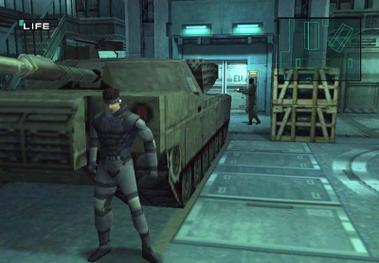
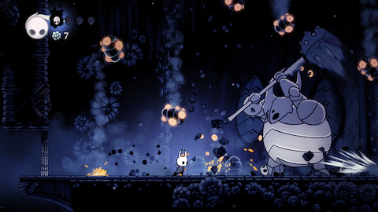

Enemigos con cerebro
Cómo un enemigo decide qué hacer: comportamientos, detección y máquinas de estado. Y al final, tres juegos famosos vistos con esos ojos.
“El slime de la semana pasada tiene una sola idea. Hoy recibe varias, y la capacidad de cambiar de idea.”
Al finalizar la clase…
- Entender qué es la IA de un videojuego (y qué no es), con ejemplos de juegos famosos
- Reconocer los comportamientos básicos de un enemigo: acechar, perseguir, atacar, reaccionar al golpe
- Modelar un enemigo como una máquina de estados: estados + transiciones
- Implementarla en GDScript con
enumymatch
El slime de la semana 3 tiene una sola idea
Hoy
Aparece → persigue al jugador → lo toca. Siempre lo mismo. A los 10 segundos ya se sabe exactamente qué va a hacer. Es predecible, y lo predecible aburre.
Lo que queremos (para el jefe)
Que aceche al jugador de lejos, despacio. Que al acercarse el jugador lo vea y salga a perseguirlo a toda velocidad. Que al alcanzarlo ataque. Que si el jugador se aleja mucho, se calme y vuelva a acechar. Y que cuando recibe un golpe, lo sienta.
if… muchos if. Y ahí está el problema que se resuelve hoy.“IA” en un juego no es lo que parece
❌ No es
Machine learning, redes neuronales, ChatGPT. Nada de eso corre dentro de un enemigo de videojuego.
✅ Es
Un conjunto de reglas simples que hacen que el enemigo parezca que piensa. Comportamiento creíble, no inteligencia real.
🎮 Cuatro ejemplos famosos, en las próximas diapositivas: Pac-Man, Space Invaders, Commandos y Doom. Ninguno tiene más de tres líneas de “inteligencia”.
Pac-Man (1980): cuatro fantasmas, cuatro reglas
Parece que los fantasmas se coordinan para rodear al jugador. No hay coordinación: cada uno tiene una regla de una línea. Blinky (rojo) apunta a la casilla de Pac-Man. Pinky (rosa) apunta cuatro casillas adelante, así que le sale al cruce. Con dos reglas distintas ya se siente que lo encierran.
# Blinky (rojo): persigue directo objetivo = pacman.position # Pinky (rosa): apunta 4 casillas ADELANTE de Pac-Man objetivo = pacman.position + pacman.direccion * 4 # Inky y Clyde: otras dos reglas, igual de cortas
Y cada tanto entran en modo Scatter: se van a su esquina y dejan respirar al jugador. La regla de oro: divertido, no perfecto.
Space Invaders (1978): la IA que fue un accidente
Los aliens aceleran a medida que mueren, y el final de cada oleada es pura tensión. No fue diseño: el hardware dibujaba más rápido cuantos menos sprites había en pantalla. Tomohiro Nishikado lo vio, le gustó, y lo dejó.
# Cada vez que muere un alien, los que quedan se apuran func _on_alien_muerto(): vivos -= 1 velocidad = velocidad_base * (55.0 / vivos)
Una sola línea de “IA” y es el mecanismo más recordado del juego. Lo que se siente bien, se queda.
Commandos (1998): el cono de visión que se ve
Hecho en Madrid por Pyro Studios. Cada soldado tiene un cono de visión dibujado en el piso. En la zona clara ve al comando siempre. En la zona oscura, solo si está de pie: agachado, pasa. Todo el sigilo del juego sale de esa única regla.
# El cono es un Area2D hijo del soldado (Clase 4) func _on_cono_body_entered(body): if body.is_in_group("comando"): if zona == CERCA or body.de_pie: dar_alarma()
Y esto ya se sabe hacer: un Area2D con forma de cono y la señal body_entered. Vuelve a aparecer en dos diapositivas.
Doom (1993): un if y los monstruos se pelean
Regla: cuando un monstruo recibe daño, pasa a atacar a quien lo golpeó. Si a un monstruo se le escapa una bola de fuego y le pega a otro, el otro se da vuelta y lo ataca. Los jugadores lo usan como táctica: ponerse en el medio y dejar que se maten entre ellos.
# Cuando un monstruo recibe daño, apunta a quien lo golpeó func recibir_dano(cantidad, atacante): vida -= cantidad if atacante != jugador: objetivo = atacante # ¡se pelean entre ellos!
Ninguno de los cuatro ejemplos tiene más de tres líneas de decisión. Eso es la IA de un videojuego. Y atención a este: el jefe de hoy también va a cambiar de comportamiento al recibir daño.
Los comportamientos básicos de un enemigo
✅ Lo que va (nuestro jefe)
| Comportamiento | Qué hace | En una línea |
|---|---|---|
| 🏃 Perseguir | Va hacia el jugador (ya está: semana 3) | dir = (jugador.position - position).normalized() |
| 🕵️ Acechar | Lo sigue de lejos, despacio | position += dir * vel * 0.5 * delta |
| ⚔️ Atacar | Se frena y pega cada tanto | if $Timer.is_stopped(): pegar() |
| 💥 Golpeado | On hit: knockback y congelado 0.5 s | position += dir_atras * 20 |
🧭 Otras opciones (hoy no)
- Patrullar (caminar al azar): en un survivors es un error. Los enemigos se van de pantalla y el jugador los evita para siempre.
- Huir con poca vida: un jefe que escapa es un jefe que no se enfrenta. Frustra.
- Esquivar balas: se puede con un
Area2Dque detecte la bala venir. Queda para proyectos propios. - Invocar minions:
instantiate()desde el jefe. Todo lo que hace falta ya se vio en la semana 3.
¿Cómo “ve” al jugador?
📏 Por distancia
Un número: si está a menos de X píxeles, lo vio. Atención: el slime de la semana 3 no detecta nada, siempre sabe dónde está el jugador y va. El distance_to lo usó el jugador para elegir a quién disparar; ahora se lo damos al enemigo, para que decida.
var d = position.distance_to(jugador.position) if d < 250: # ¡lo vi!
Simple, barato, sirve para el 90 % de los casos. Es lo que usa el jefe.
👁️ Con un Area2D de visión
Un Area2D hijo del enemigo, con forma de círculo o cono. Cuando el jugador entra, se emite body_entered; cuando sale, body_exited.
Más flexible: conos de visión, sigilo. Es exactamente el cono de Commandos, y todo lo que necesitan ya lo vieron en la Clase 4.
Con if se vuelve un spaghetti
func _process(delta): if golpeado: if $TimerGolpe.is_stopped(): golpeado = false elif lo_vi and not atacando: perseguir(delta) if d < 40: atacando = true elif atacando and not golpeado: atacar() if d > 60: atacando = false elif not lo_vi: acechar(delta) if d < 250: lo_vi = true func recibir_dano(cantidad): golpeado = true # ¿y atacando? ¿y lo_vi? ¿los toco o no? # ¿y si golpeado y atacando son true a la vez? 🤯
Lo que sale mal
- Tres booleanos que pueden contradecirse
- Cada comportamiento nuevo rompe los anteriores
- Imposible saber “¿qué está haciendo ahora?”
Máquina de estados: una sola pregunta
En vez de tres booleanos, una variable: estado. El enemigo está en un estado a la vez, y solo cambia por transiciones definidas.
- Estado: qué está haciendo (acechar, perseguir…)
- Transición: la condición para pasar a otro
- Un estado a la vez. Nunca dos.
🚦 Analogía: el semáforo
Tres estados: verde, amarillo, rojo. Nunca dos prendidos. Y las transiciones son fijas: verde → amarillo → rojo → verde. Nadie se confunde.
Se llama Finite State Machine (FSM). “Finita” porque los estados son pocos y conocidos.
La máquina de estados del jefe
enum para nombrar, match para elegir
# enum: una lista de nombres. Cada uno # es un número por dentro, pero en el # código se usa el nombre. Cero confusión. enum Estado { ACECHAR, PERSEGUIR, ATACAR, GOLPEADO } var estado = Estado.ACECHAR
# match: un if/elif especializado para # comparar UNA variable contra varios # valores. Más limpio que elif, elif… match estado: Estado.ACECHAR: acechar(delta) Estado.PERSEGUIR: perseguir(delta) Estado.ATACAR: atacar() Estado.GOLPEADO: golpeado()
if estado == Estado.ACECHAR: … elif … y funcionaría igual. match es lo mismo, pero se lee como el diagrama.El _process: hacer + decidir
func _process(delta): var d = distancia_al_jugador() match estado: Estado.ACECHAR: acechar(delta) # hacer if d < 250: estado = Estado.PERSEGUIR # decidir Estado.PERSEGUIR: perseguir(delta) if d < 40: estado = Estado.ATACAR elif d > 350: estado = Estado.ACECHAR Estado.ATACAR: atacar() if d > 60: estado = Estado.PERSEGUIR Estado.GOLPEADO: golpeado() # on hit: quieto y rojo if $TimerGolpe.is_stopped(): estado = Estado.PERSEGUIR
El patrón, siempre igual
En cada estado, dos cosas y en este orden:
- Hacer lo que corresponde al estado
- Decidir si cambio de estado
Comparado con el diagrama: cada if es una flecha. Falta una sola: la de entrada a GOLPEADO, que no depende de la distancia y vive en recibir_dano(). Se escribe en vivo en la Clase 8+.
Pac-Man: el fantasma tiene cuatro estados

- Estados: Scatter (cada uno a su esquina), Chase (cazan a Pac-Man), Frightened (azules, huyen), Eaten (ojos que vuelven a la casa).
- Qué dispara los cambios: Scatter ⇄ Chase cambian por tiempo, con un reloj fijo: 7 s, 20 s, 7 s, 20 s… Frightened entra por evento (la píldora grande) y sale por tiempo.
- Cómo lo muestra: El color. Azul = se lo puede comer. Y parpadea justo antes de salir del estado: el juego avisa que se le acaba el tiempo.
Es exactamente la máquina del jefe: flechas por tiempo y flechas por evento conviviendo. En 1980.
Metal Gear Solid: el estado está en pantalla

- Estados: Patrol (ruta fija), Alert (vio a Snake y llama a todos), Evasion (lo buscan donde lo vieron), Caution (patrullan nerviosos).
- Qué dispara los cambios: Entrar a Alert es por evento: el cono de visión agarró a Snake. Salir de Evasion y de Caution es por tiempo: un contador que baja hasta cero.
- Cómo lo muestra: El “!” sobre la cabeza es la transición dibujada. Y el contador aparece en el radar: es un
Timera la vista, como elTimerGolpedel jefe.
Todo el sigilo es jugar con esa máquina: esconderse hasta que el contador llegue a cero.
Hollow Knight y los souls: leer el estado es el juego

- Estados: Idle, Aggro (sigue al jugador), y el ataque partido en tres: aviso (levanta el arma), golpe (el daño) y recuperación (queda indefenso).
- Qué dispara los cambios: Idle → Aggro por distancia. Aggro → Ataque cuando el jugador está cerca. Dentro del ataque, por tiempo: cada parte es una animación con su duración.
- Cómo lo muestra: La animación de aviso es el juego diciendo “cambié de estado, queda medio segundo”. Aprender a leerla es la habilidad de estos juegos.
La recuperación es la ventana para pegarle: el equivalente al jefe golpeado, congelado medio segundo.
¿Qué tienen en común?
| Juego | Estados | Qué dispara los cambios | Cómo lo muestra |
|---|---|---|---|
| 👻 Pac-Man | scatter · chase · frightened · eaten | tiempo (reloj fijo) + evento (píldora) | el color azul y el parpadeo |
| ❗ Metal Gear Solid | patrol · alert · evasion · caution | evento (lo ve) + tiempo (contador) | el “!” y el contador en el radar |
| 🗡️ Hollow Knight | idle · aggro · aviso · golpe · recuperación | distancia + tiempo (animaciones) | la animación de aviso |
| 🟣 El jefe de hoy | acechar · perseguir · atacar · golpeado | distancia + evento (bala) + tiempo (Timer) | la etiqueta encima y el rojo |
Dibujar la máquina de estados de Boo
El fantasma Boo de Super Mario tiene una regla famosa: si Mario lo mira, se tapa la cara y se queda quieto; si Mario le da la espalda, avanza hacia él. Si está lejos, flota en el lugar.
- ¿Cuántos estados tiene? Ponerles nombre en MAYÚSCULAS, como en el
enum - Dibujar las flechas y escribir la condición de cada una
- Marcar cada flecha: ¿es por distancia, por evento o por tiempo?
- ¿Qué dato del jugador necesita consultar Boo para decidir?
🧠 Y una pregunta sobre el jefe
El jefe pasa a ATACAR a menos de 40 px, pero vuelve a PERSEGUIR recién a más de 60 px. ¿Por qué no usar 40 en las dos flechas?
Pista: pensar en un jugador parado justo a 40 px, moviéndose un píxel para cada lado.
Boo: tres estados, y el “evento” es hacia dónde se mira
Estado.AVANZAR: avanzar(delta) if mario_me_mira(): estado = Estado.TAPARSE Estado.TAPARSE: # quieto: no hace nada if not mario_me_mira(): estado = Estado.AVANZAR
Lo que hay que llevarse de hoy
| Idea | En una línea |
|---|---|
| IA de un juego | Reglas simples que hacen que un enemigo parezca pensar. Divertida, no perfecta |
| Comportamientos | Acechar, perseguir, atacar, reaccionar al golpe: cada uno es trivial por separado |
| Detectar | Por distancia (distance_to) o con un Area2D de visión |
| Máquina de estados | Una variable estado, un estado a la vez, transiciones definidas |
enum + match | Nombrar los estados y elegir qué hacer en cada uno |
| Hacer + decidir | En cada estado: primero el comportamiento, después la pregunta “¿cambio?” |
| Tres disparadores | Distancia, evento (un golpe) y tiempo (un Timer) |
Próxima clase: el jefe, en vivo
🔴 Clase 8+ · en vivo
- El élite deja de ser kamikaze: su propio
_processconmatch ACECHAR⇄PERSEGUIR, con una etiqueta que muestra el estadoATACARcon unTimer, yGOLPEADOal recibir daño- Una función
cambiar_estado()para que cada cambio se note
📝 Para traer
- El proyecto de la Clase 5+ (o el TP3) con el élite funcionando
- El diagrama de Boo, en papel o foto
- Pensar: ¿cómo se “anula” en la clase hija una función de la madre?
Ilustraciones propias. Capturas de juegos: uso educativo, © de sus dueños. · Logo y mascota de Godot © Godot Foundation — CC BY 4.0.